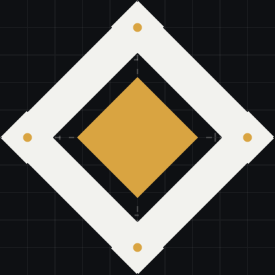
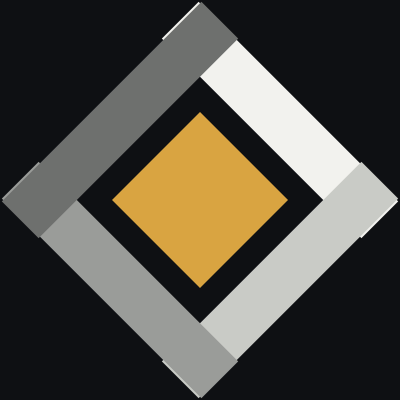
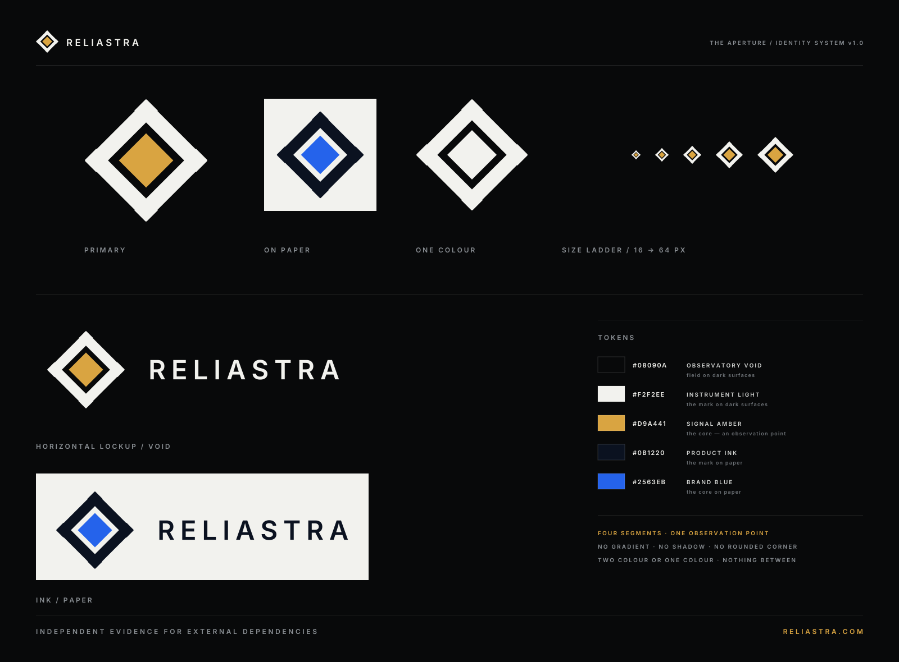

Reliastra identity system — v1.0 / 2026
The aperture.
Four segments,
one observation point.
A mark built from parts: two vantage points, two readings, and a single amber point in the opening. Not a shape with a story added afterwards — a figure that is only correct when the geometry is.
The aperture
Every dimension is a decision you can check.
Drawn on a 100-unit grid. The four segments are identical: 13 units wide, running between the vertices of a square rotated 45°, each overrunning the vertex it meets by 7 units. The core is a 22-unit diamond on the centre. No curve, no gradient, no optical correction — the figure must be exact in one colour, at any size, on any surface.


01 — A frame with no front
A rotated square is a boundary, not an object. It has no top, no face and no direction, which is what lets it sit beside a wordmark, inside a tab and on a record without ever reading as a mascot.
02 — Four parts, two of each
Four equal segments answer to four equal quadrants: two independent vantage points, two readings. The method — observe, correlate, attribute — is in the geometry rather than in a caption.
03 — The overrun is the mark
Each segment passes its vertex and stops. That one irregular move in an otherwise exact figure is what separates the mark from a diamond with a dot inside it — and it survives to 16 px as a flare at the diagonals.
04 — Amber is the reading
The core is the signal square the interface already uses for an observation point. Amber is the product's single accent and also its degraded state: the accent colour of this product is the colour of something needing attention.
Mark, then name.
The wordmark is RELIASTRA set in Inter SemiBold, letterspaced 0.21em and outlined as vector paths — the lockup carries no font dependency, so it renders identically in a README, an email client, a print pipeline and a browser tab. The gap between mark and name is 30 units against a 100-unit mark.
It has to work at 16 px, or it does not work.
Shown at true size. The overrun is what keeps the mark legible as it shrinks: at favicon scale the segments are still distinguishable at the diagonals, so the figure never collapses into a solid diamond.
Where it is actually going to live.
Drawn at interface size, not zoomed. A mark is only real in the places it is small: a tab, a header, a sidebar, a link preview, an avatar, a terminal.
can prove.
Two colours and a signal.
The mark is not the place to introduce a palette. It draws from tokens the product already publishes — the observatory foundation, the instrument light, the single accent — so the identity cannot drift away from the product it belongs to.
On light surfaces the core switches to brand blue. It never switches to amber: amber is a state, not a decoration.
Six rules, and the reason for each.
An identity fails in the small decisions that nobody wrote down. These are the ones that matter here.
Everything below is generated by one script.
design/logo/generate.cjs writes every file in this section,
including the copies the frontend serves. Change a variable, re-run, review.

{kind=link}
| File | Use | Notes |
|---|---|---|
| mark.svg | Primary mark | Light on void · 100 × 100 · no font |
| mark-ink.svg | Mark on paper | Ink + brand blue |
| mark-mono.svg | One colour | Stamps, engraving, low-colour print |
| lockup-horizontal.svg | Lockup — void | Wordmark outlined as paths |
| lockup-horizontal-ink.svg | Lockup — paper | Ink wordmark, brand core |
| lockup-horizontal-mono.svg | Lockup — one colour | Single-value reproduction |
| lockup-stacked.svg | Covers & plates | Mark over name over descriptor |
| app-icon.svg · favicon-32.png · favicon-16.png | Icons | Void tile, optical inset |
| app-icon-512.png · 1024 · apple-180 | App icons | Sharp corners, tile inset 17% |
| avatar.svg · avatar-512.png | Email & social avatar | Larger inset — survives round crop |
| mark-1024.png · lockup-horizontal-1600.png | Raster masters | Transparent background |
| brand-sheet.svg · 1600 · 3200 | One-image brand sheet | PRs, decks, social — no font dependency |
| construction.svg · parts.svg | Specification plates | Grid and assembly reference |
{kind=link}
{kind=link}
{kind=link}
{kind=link}
{kind=link}
{kind=link}
{kind=link}
{kind=link}
{kind=link}
{kind=link}
{kind=link}
{kind=link}
{kind=link}
{kind=link}
{kind=link}
{kind=link}
{kind=link}
{kind=link}
{kind=link}
{kind=link}
{kind=link}